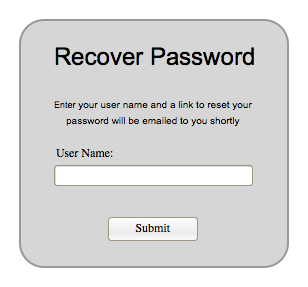

The following image depicts what the login screen will look like to any user.


The login screen allows users to login to the site to access all of the features that their account gives them access to. If they type in their username and password and click submit the users credentials will be validated and if correct they will be logged in. If they are incorrect they will get an error message as seen below.
If the user has forgotten their password they can click "Forgot Password?" which will take them to a password recovery screen. If the user does not have an account then they can click the register button and be taken to the registration screen seen below.
In the registration screen a new user types in all of their information and clicks submit, the data is then validated to make sure there is not an existing user with those credentials. If there is an existing user then the user is asked to enter a new username. If there is no conflict with the credentials then the user is registered and will be sent an emai lto verify registration.
If the user clicked "Forgot Password?" on the login screen then they will see the below dialog. After the user types in their email address and clicks submit the email address will be checked to see if it belongs to a registered user and if it does then an email with a secure password reset token is emailed to the user.
